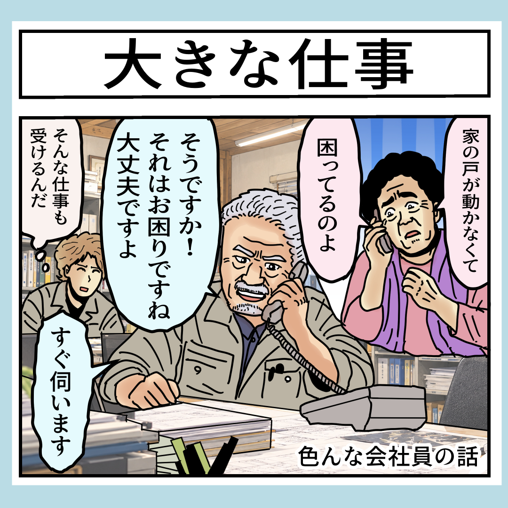
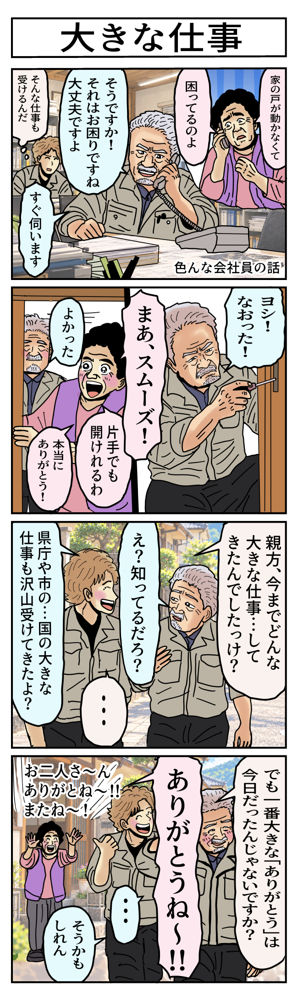
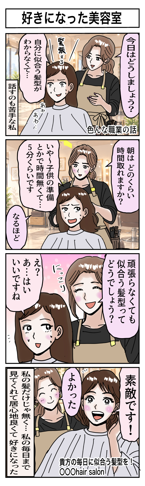

商品のストーリー
なぜこの商品を作ったのか。
職人がこだわる、ひと手間。
つくり手の想いを届けます。
企業・店舗・個人事業主の方へ
商品へのこだわり。働く人の想い。
会社にしかないエピソード。
うまく言葉にできない魅力を、
読みたくなる4コマ漫画にします。
1本 40,000円〜（税別）
税込44,000円〜 ／ ヒアリング・企画込み
YOUR STORY
そんな会社の魅力を、
4コマ漫画にします。
STORY IDEAS
なぜこの商品を作ったのか。
職人がこだわる、ひと手間。
つくり手の想いを届けます。
会社を始めたきっかけ。
創業当時の忘れられない出来事。
大切にしている考え方を形に。
この仕事を選んだ理由。
新人時代の失敗や、お客様の言葉。
人柄が見えるエピソードを。
特徴や使い方も、
「こんなときに役立った」という
読みたくなるストーリーに。
OUR APPROACH
商品のメリットを並べるだけでは、
伝わらないことがあります。
なぜ作っているのか。どんな人が作っているのか。
うめじろうは「人」と「出来事」を中心に、
そこにある小さなストーリーを見つけます。
「なんかいい会社だな」
「この人から買いたいな」
そんな気持ちが生まれる4コマを目指して。
SELECTED STORIES
人柄やこだわりが、物語になると。
まずは、ひとつ読んでみてください。
気になる漫画を選ぶと、下に全編が表示されます。
STORY 01 / 工務店
小さな依頼にも、まっすぐ。
動かなくなった戸を直す、小さな仕事。お客様の大きな「ありがとう」から、会社が大切にする姿勢を描きました。
制作サンプル／架空の会社
漫画を大きく読む
上から下へお読みください。タップで拡大できます。
STORY 02 / 美容室
話すのが苦手な人にも、寄り添う。
髪型の希望をうまく話せないお客様。暮らしや人柄まで聞いて提案する、美容師の思いやりを物語に。
制作サンプル／架空のお店
漫画を大きく読む
上から下へお読みください。タップで拡大できます。
STORY 03 / 働く人
何気ないひと言に、人柄が見える。
ひとりで調べ続ける新人に、先輩がかけた言葉。教え合う関係の温かさを、短い会話で描いた創作漫画です。
創作漫画／人物表現の例
漫画を大きく読む
上から下へお読みください。タップで拡大できます。
次は、あなたの会社のお話を。 相談してみる ↗
COMIC → ANIMATION
漫画で描いたストーリーに、動きと音声を。
人柄や想いを、ショートアニメーションでも届けられます。
InstagramなどのSNSや、ホームページの紹介動画に。漫画と動画で、同じ物語を活用できます。
アニメーション制作は別途お見積もりです。
4コマ漫画制作40,000円〜（税別）には含まれません。
SERVICE & PRICE
何を描くか、一緒に考えるところから。
1本 40,000円〜
税別 ／ 税込44,000円〜
会社の魅力を聞く → 物語にする → 4コマに描く
制作内容に応じてお見積もりします。修正の範囲・回数や納期は、ご依頼前にご案内します。
会社や商品についてお話を聞き、テーマから一緒に考えます。漫画の内容を考えていただく必要はありません。
相談・お問い合わせは無料です。
家族、夫婦、会社員。
日常の中にある出来事を、長年Instagramを中心に4コマ漫画として発信しています。
得意なのは、人の感情や、何気ない出来事の中にある「気づき」を描くこと。企業PR漫画の制作実績もあります。
umejiro story studioでは、企業・商品・人の魅力を聞き取り、漫画というストーリーに変えて届けます。
WHY UMEJIRO?
「何を漫画にすればいいかわからない」というところから相談できます。
社長、社員、職人、お客様。商品だけでなく、そこにいる「人」を主人公にします。
長年の発信経験を活かし、短い中でも最後まで読めるストーリーを考えます。
HOW WE WORK
InstagramのDM・メールから、気軽にご相談ください。
会社、商品、伝えたいことなどをお聞きします。
お話をもとに、4コマ漫画の構成を考えます。
内容をご確認いただきながら制作します。
完成した漫画データを納品。SNSやWebでご活用ください。
QUESTIONS
問題ありません。会社や商品についてお話を聞きながら、漫画にできそうなエピソードを一緒に探します。
可能です。オンラインでヒアリング・制作できます。
はい。Instagramをはじめ、SNSやホームページ等で利用できます。
漫画制作と、うめじろうInstagramへの掲載は別サービスです。掲載をご希望の場合は別途ご相談ください。
内容によって対応可能です。その他の制作も、まずはお問い合わせください。
LET’S TALK ABOUT YOUR STORY
まだ内容が決まっていなくても大丈夫です。
「こんなことを伝えたい」
という段階からご相談ください。
DM・フォームから選べます ／ 相談・お問い合わせは無料です。
メールで相談する ↗umejiro.story.studio@gmail.com